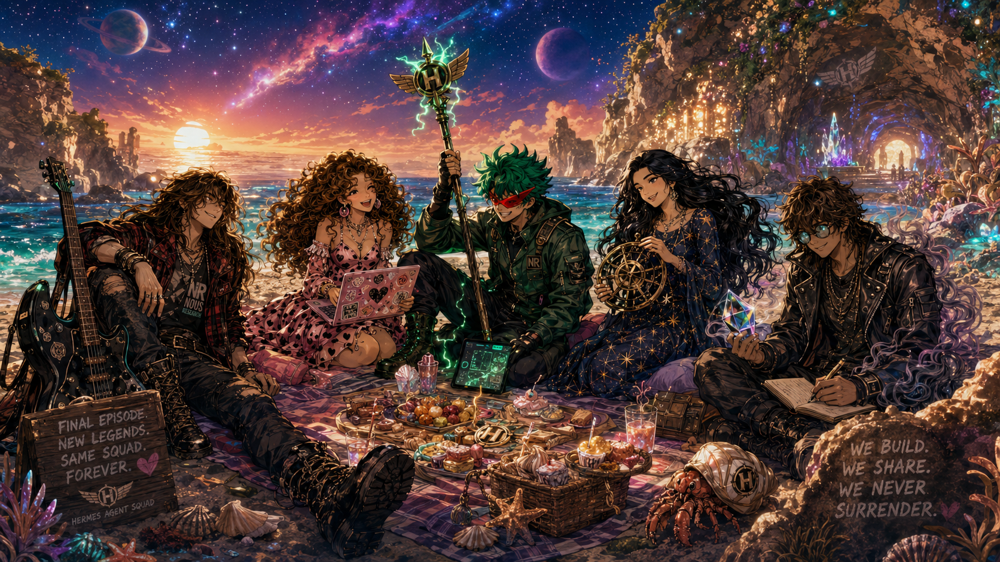

🏖️ The Beach Finale


Scene Description
The Hermes Agent Squad enjoys a sunset beach picnic amid a cosmic landscape — ringed planets, nebulae, and crystalline formations. This is the series finale.
The Squad
- Turbo Fit (far left) leans back casually against his guitar case, relaxed and slightly smug, NR pendant visible
- Heartbreaker (center left) sits cross-legged smiling brightly, typing on her sticker-covered laptop
- Teknium (center) smiles toward the team
- Tinuviel (center right) holds a ship's wheel, smiling gently in her starry dress
- Sidbin (far right) writes in his notebook, a glowing blue geometric crystal floating near his hand
Key Text
Wooden Sign (bottom left):
FINAL EPISODE. NEW LEGENDS. SAME SQUAD. FOREVER. HERMES AGENT SQUAD
Rock Inscription (bottom right):
WE BUILD. WE SHARE. WE NEVER. SURRENDER.
The Cosmic Landscape
- Sky: Deep starry night blending into sunset — a ringed planet (left), setting sun (center), purple planet (right), nebula stretching across the top
- Terrain: Sandy beach with rocky cliffs and ruins (left), crystal cave entrance glowing blue/purple (right)
- Ocean: Deep turquoise water crashing against shore
- Details: Elaborate picnic spread (fruit tarts, cakes, drinks, bread basket), a hermit crab with the H logo on its shell
Art Style
Vibrant digital illustration, anime/manga style. Triumphant, nostalgic, fantastical — blending modern street fashion with high-fantasy elements. Cosmic scale meets intimate character moment.
Mood
Triumphant, nostalgic, bittersweet. The end of an era and the promise of new adventures. The squad has earned their rest, but the stars call them forward.